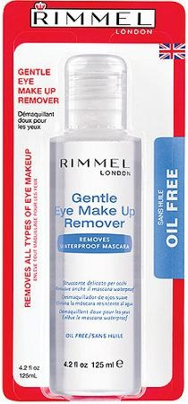
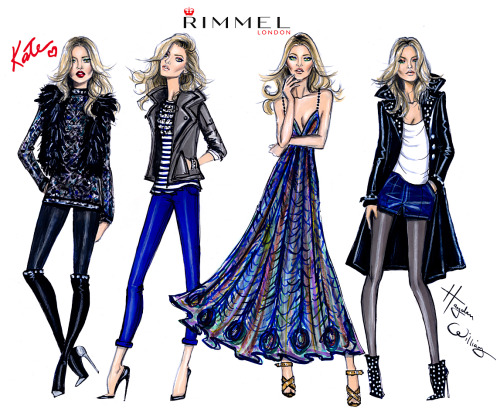

At the end of your day don't forget to take off you makeup- goldenbeautify

Long lasting and waterproof eye make up remover
- Gently removes all eye make up, including long lasting & waterproof make up, with no oily residue.
- Suitable for sensitive eyes & contact lens wearers.
- Its Works and its only $3.99 you can get it your near by Target or Ulta.

